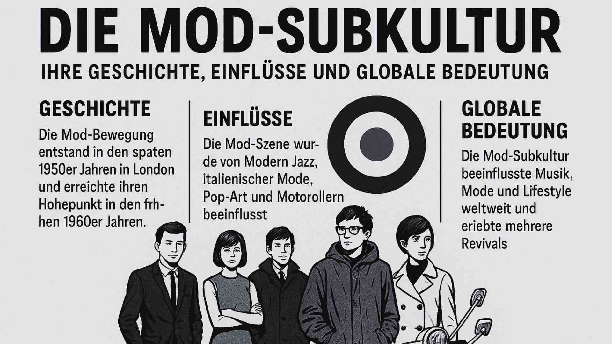

Die Mod-Subkultur: Ihre Geschichte, Einflüsse und globale Bedeutung

Einleitung
London, Ende der 1950er Jahre: Eine Generation zwischen Wiederaufbau und Aufbruch erfindet sich neu. Die Mods – kurz für Modernists – wollten anders leben, anders aussehen, anders denken. Sie schufen eine Bewegung, die weit über Mode hinausging: ein urbanes Lebensgefühl aus Stil, Musik, Technik und Haltung.
Hauptteil
Ursprung und sozialer Kontext
Nach Jahren der Entbehrung suchten junge Menschen der Arbeiterklasse nach Ausdruck und Aufstieg. Der Mod-Look – italienische Anzüge, Parkas, Motorroller – wurde zum Symbol eines neuen Selbstbewusstseins. Konsum war plötzlich nicht Flucht, sondern Freiheit.
Musik und Lifestyle
Der Soundtrack der Bewegung war eklektisch und kosmopolitisch: Modern Jazz, Soul, R&B, Ska. Bands wie The Who und The Kinks übersetzten diesen Geist in Hymnen der Jugend. In den 1980er-Jahren feierten Gruppen wie The Jam oder The Specials ein Revival – politischer, sozialer, bewusster. In Clubs verschmolzen Tanz, Mode und Gemeinschaft zu einer eigenen Mikro-Welt, einer Ästhetik der Selbstgestaltung.
Kunst, Design und Medien
Mod war mehr als Stil – es war visuelle Kultur. Pop-Art-Künstler wie Peter Blake fingen Konsum und Jugend in grellen Farben ein. Das Target-Symbol wurde zum grafischen Erkennungszeichen. Filme wie Quadrophenia (1979) oder die Fotografien von David Bailey machten die Bewegung unsterblich.
Politik und Ideologie
Mods lehnten Hierarchien ab und feierten Vielfalt. Sie waren kosmopolitisch, antiautoritär, urban. Die legendären Auseinandersetzungen mit den Rockers spiegelten soziale Spannungen – Arbeiterklasse gegen Ordnung. Spätere Revivals verbanden Stil mit Engagement gegen Rassismus und Diskriminierung.
Globaler Einfluss
Von Jamaika bis Japan, von USA bis Europa: Der Mod-Gedanke passte sich an lokale Kulturen an und blieb dabei international. Er inspirierte Generationen von Designer:innen – etwa Paul Smith – und lebt in Mode, Musik und Subkulturen bis heute weiter.
Fahrradmod – Eine persönliche Perspektive
Im Graphic Novel Fahrradmod (Carlsen Verlag, 2024) erzählt Tobi Dahmen seine Jugend in der Mod-Szene – eine Geschichte über Musik, Zugehörigkeit und Identität. Sein Werk ist Erinnerung und Reflexion zugleich: Subkultur als Weg zur Selbstbestimmung.
Fazit
Mod war nie bloß Mode. Es war eine Haltung – eine Feier von Stil, Intelligenz und Bewegung. Die Ideale von Freiheit, Vielfalt und kulturellem Austausch machen die Subkultur zeitlos.
Meinung
Für mich steht Mod für das Recht, sich selbst zu entwerfen. Es ist der Beweis, dass Stil politisch sein kann – elegant, aber rebellisch. In einer Zeit, in der Identität wieder verhandelt wird, bleibt die Mod-Kultur ein Symbol dafür, dass Individualität und Solidarität sich nicht ausschließen, sondern ergänzen.